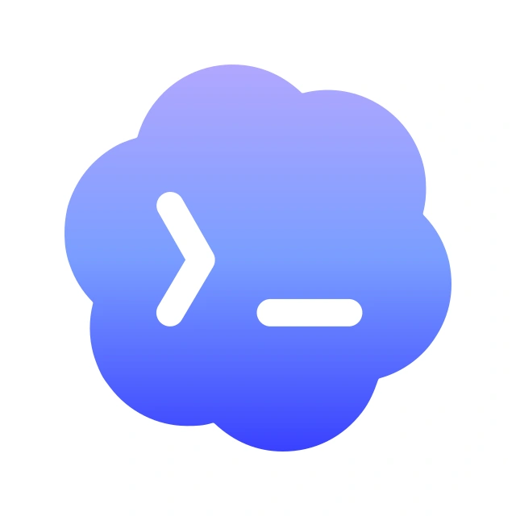

CODEX尚未同步
把你的创作，带在身边。
Codex 每日 Token 自动从本机读取，额度从浏览器读取；知乎和小红书使用浏览器已登录账号。未登录的站点会提示登录。
本机组件只需安装一次，此后由浏览器自动启动，无需填写启动码。首次安装请在项目目录依次创建虚拟环境、安装 requirements.txt，再执行下方注册命令，然后重新加载扩展。
python3 -m venv .local-tools/folocard-venv
.local-tools/folocard-venv/bin/pip install -r tools/folocard/requirements.txt读取后自动保存并更新屏幕预览，核对确认后才会同步到设备。
此处按设备的 240 × 320 屏幕比例展示。切换页面或点按屏幕，可预览按键后的效果。

CODEX尚未同步
设备上双击 OK 进入同步设置，再按 OK 开启蓝牙。点击同步后会自动扫描 FoloCard。首次连接时，只需在 macOS 系统配对框输入设备屏幕上的六位 PIN；扩展页面不会索要 PIN 或启动码。
如果出现 BLE 连接失败，请先在系统蓝牙设置中忽略已有的 FoloCard，再重新配对。